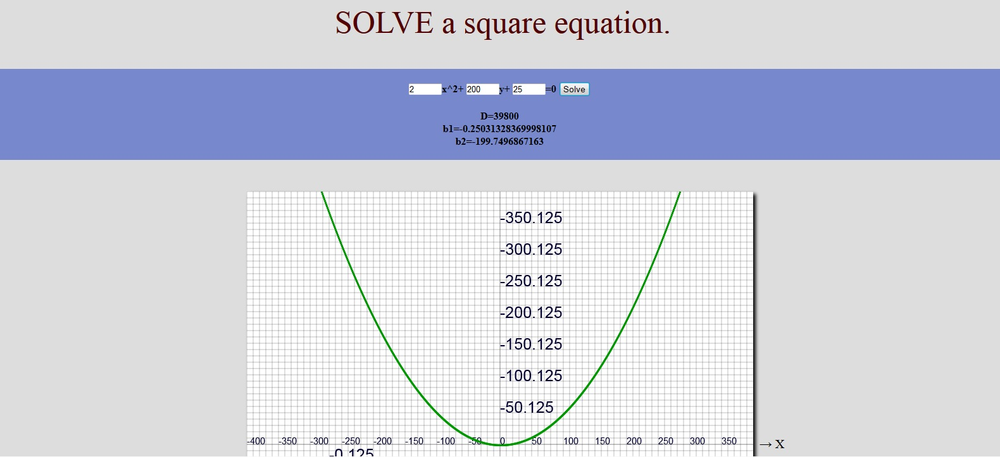

Real estate website developed by me. Tenders are real and I hope you find it useful.
 SportGreat CMS
SportGreat CMS
This is a CMS for sports news. The admin panel is very simple and is user friendly. The news are taken in PHP and then put in Javascript. The user can add and delete news, add and delete banners. Enjoy...
 Enjoy-Destroy
Enjoy-Destroy
2D game with the simple goal to break all the goals from the field. Checks hitch elements and their behavior are set relatively high level, which contributes for a more realistic experience.
 Environment2D
Environment2D
This box with spheres represent 2D environment in which certain valid Terms of objects in it. They move at a speed proportional to the their size and collision bounce in opposite directions.
 SQ solver
SQ solver
With this simple tool you can solve quadratic equation and see the graph of the function described by him.
 Web paintThis product resembles the familiar paint program. With new technologies like html5 and canvas can be made far more serious instrument, but the underlying technologies are accepted on all platforms and in this respect the program has advantages.
 ProductPage
ProductPage
This is an example of introducing product for selling online.
ProductPageNewProduct website for selling Elixir for Health. The index webpage is made for downloading one part of the data and if certian events occure load the rest of the data. This make the website more compact.
Real BallThe environment and the objects are set to imitate 2D field in which the objects showing some behavior.
 Drow circle
Drow circle
The program draws a circle with a certain radius.